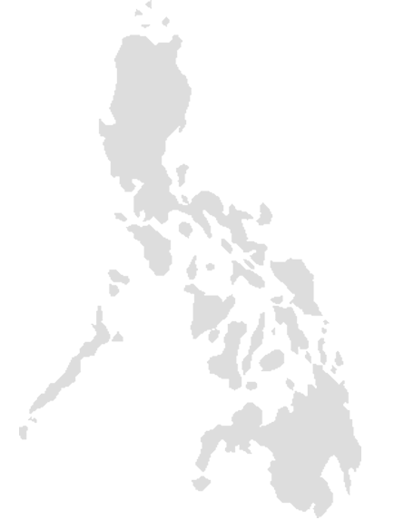
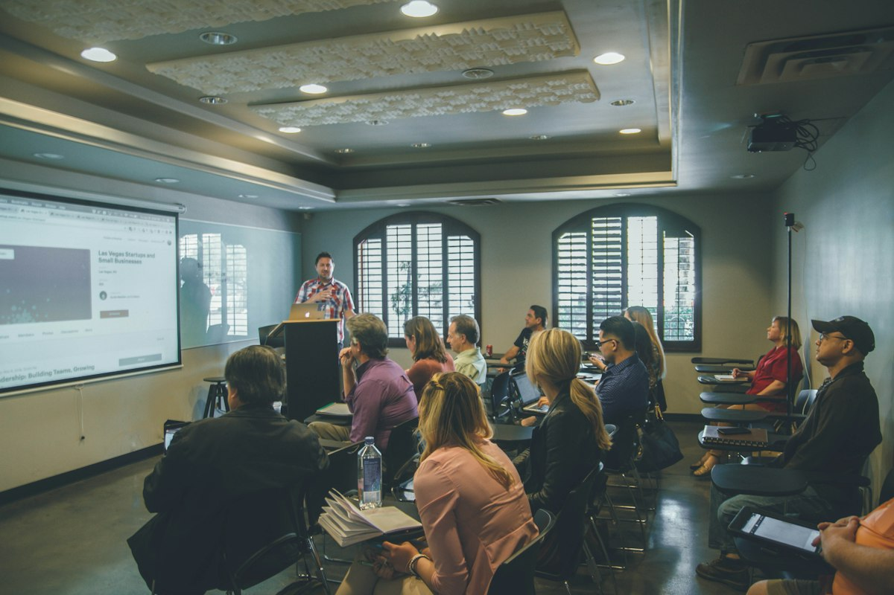

A1
Beginner
German A1
Build a foundation in everyday German — greetings, introductions, familiar expressions, and the confidence to handle simple conversations.
Inquire about A1German language institute · Philippines
Since 2015, Intermed Language Institute has helped learners across the Philippines build real German skills — from first words to B2 fluency and C1 examination preparation.
The institute
Founded in 2015, Intermed Language Institute is a leading German language education institution dedicated to high-quality learning for individuals who want to strengthen their communication skills. With a strong commitment to excellence, we have become a premier destination for German language education in the country.
Our eight strategically located branches make learning accessible and convenient for learners of all ages and backgrounds, with facilities designed for a dynamic and engaging classroom experience.
Courses & programmes
Learn and progress with courses designed for beginners through to professionals. Course schedules and intake dates are confirmed by your chosen branch — ask our team about the next class.
Build a foundation in everyday German — greetings, introductions, familiar expressions, and the confidence to handle simple conversations.
Inquire about A1Move into routine situations with simple, direct exchanges about work, family, shopping, and daily life.
Inquire about A2Follow the main points of familiar matters and communicate more independently at work, school, and in leisure.
Inquire about B1Develop the fluency to handle complex texts, discussions, and professional communication with confidence.
Inquire about B2German for nursing practice: medical vocabulary, professional role plays, and the communication skills needed for opportunities in Germany and Austria.
Inquire about this courseFocused preparation for German examinations up to C1 level, building exam technique, range, and confidence.
Inquire about C1Schedules, tuition, and availability are not published on this page. Your branch will confirm the current details for your chosen course.
Ask about schedules & availabilityExaminations
Intermed prepares learners for recognised TELC examinations, with structured preparation and guidance from teachers who know the formats.
Preparation for the TELC B2 German examination, focused on the listening, reading, writing, and speaking skills the exam demands.
Inquire about B2 examinationsExamination preparation for nurses, combining professional nursing language with the communication tasks used in the TELC Pflege examination.
Inquire about Pflege examinationsOur branches
Select a branch to see its verified address and contact details. Where a direct branch line is not published, our main office will connect you.

Iloilo is an IELTS Exam Center.
01 / 08
02 / 08
03 / 08
04 / 08
A direct branch address and telephone number are not currently published. Our main office will connect you with the Kalibo team.
05 / 08
06 / 08
A direct branch address and telephone number are not currently published. Our main office will connect you with the Cebu team.
07 / 08
08 / 08
A direct branch address and telephone number are not currently published. Our main office will connect you with the Davao team.
Why Intermed
A national network, small classes, and teachers who understand both the language and the opportunities it opens.
A decade of German language teaching, with an institutional track record built on consistent classroom standards.
Highly motivated teachers with the training to guide learners from first expressions to examination level.
A maximum of 20 students per class gives every learner more attention, practice, and speaking time.
Eight branches across the Philippines — Baguio, Manila, Lipa, Kalibo, Iloilo, Cebu, Cagayan de Oro, and Davao.
German courses from A1 to B2, with examination preparation available up to C1 level.
Specialised B2 German for nurses preparing for professional opportunities in Germany and Austria.
Not sure which level is right for you? Our team can help you choose a starting point based on your experience and goals.
Talk to our teamStudent voices
The people who learn with us are the clearest measure of the classroom experience.
With Intermed Language Institute, we learn German not only with our hearts, but with our souls too! It is not an old-school learning method, it is like placing yourself in Germany while your books, teachers and assignments walk you through it.
As a nurse, it was easier for me to learn B2-Pflege because all the medical terms we know are incorporated in our lessons in German. I know that when I start work as a nurse in Germany, I will not be afraid to adjust quickly.
Hallo, wie geht's? This is the first German sentence I know and it still is my opening line when I meet a German speaker in Germany. Und ja, ich wohne jetzt in Deutschland! Vielen Dank, Intermed!
News & updates
Official resources on German language requirements and nursing careers, plus the latest updates from our community. Follow us on Facebook.
The official portal of the German Federal Government explains the demand for nursing professionals, the recognition process, and the B2 German language requirement for long-term practice.
Read the official guideLearn about TELC examination formats and find the official information for the B2 and B1–B2 Pflege examinations.
Visit TELCOur Facebook page is where branch news, intake announcements, and community updates are shared first.
Follow Intermed on Facebook
Careers
We are always looking for talented teachers to join our team. If you are passionate about language education and want to work in an institution with national reach, we would like to hear from you.
Apply NowStart a conversation
Speak with us about examinations and careers. Our team will point you to the right branch and next step.
Start an inquiry